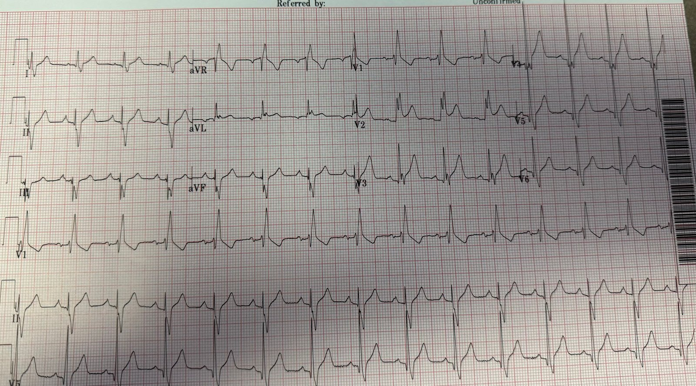
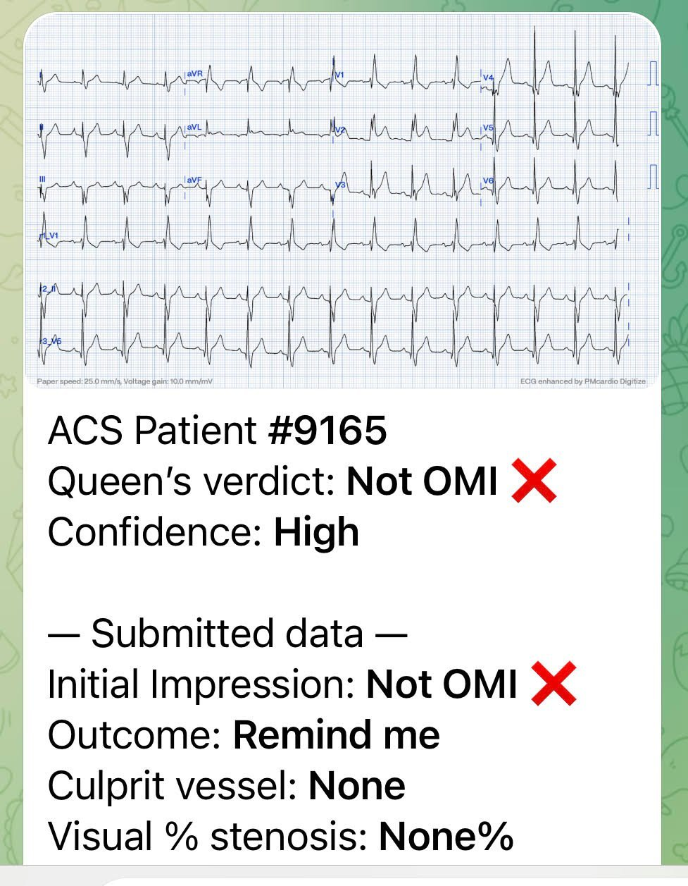
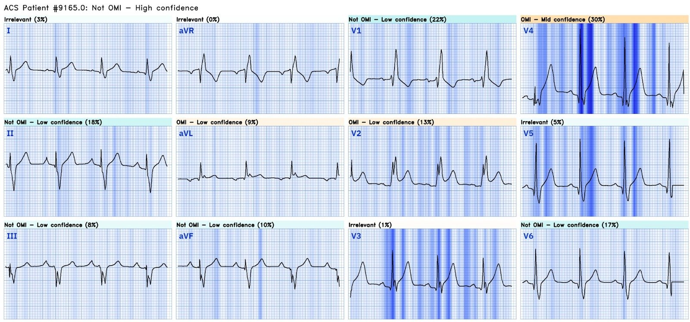
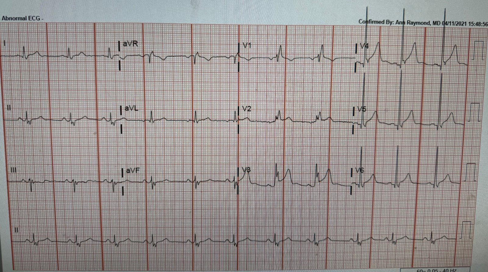
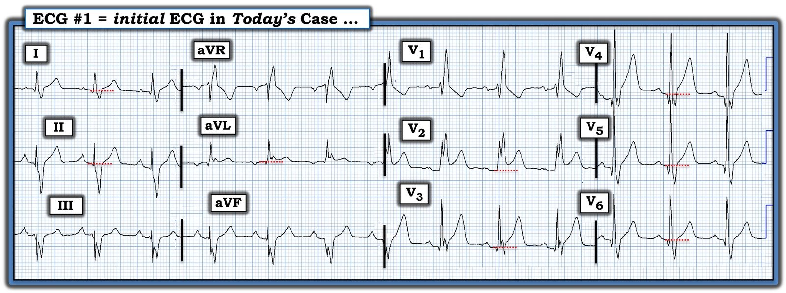

01/11/2023 — Bạn nghĩ gì về điện tâm đồ được nhắn tin cho tôi này?
Bản dịch tiếng Việt của bài "What do you think of this ECG that was texted to me?" – Dr. Smith’s ECG Blog. Giữ nguyên toàn bộ 6 hình ảnh của bản gốc.
Điện tâm đồ này được một đồng nghiệp nhắn tin cho tôi. Tôi cho rằng nó thuộc về một bệnh nhân có triệu chứng phù hợp với hội chứng vành cấp (ACS)/nhồi máu cơ tim do tắc (OMI).


Bạn nghĩ gì?
Có nhịp xoang kèm RBBB và ST chênh lên ở V2, đồng hướng với QRS. Trong RBBB, đoạn ST lẽ ra phải là ST chênh xuống, ngược hướng với sóng R’ dương (tức là ngược chiều với sóng R’ hướng lên) . Nhưng đôi khi chúng ta vẫn thấy ST chênh lên (STE) đồng hướng này ngay cả trên những điện tâm đồ không do thiếu máu cục bộ:
PseudoSTEMI and True ST elevation in Right Bundle Branch Block (RBBB) (Giả STEMI và ST chênh lên thật trong blốc nhánh phải). Đừng bỏ lỡ ca 4 ở cuối bài.
STE này gợi ý OMI, nhưng chúng tôi đã gặp nhiều ca như thế này là dương tính giả (giả OMI). Tôi nghĩ nó không trông giống OMI nhưng không sẵn lòng đánh cược tính mạng bệnh nhân bằng cách nói như vậy.
Tôi gửi nó cho vài người bạn "mọt" điện tâm đồ (dĩ nhiên trong đó có Pendell) và Pendell trả lời:
“Khó quá. Tôi sẽ coi là thật cho đến khi chứng minh được điều ngược lại. Một điện tâm đồ nền có thể bác bỏ điều đó trong 10 giây.”
Dĩ nhiên anh ấy đúng. Vì vậy tôi yêu cầu một điện tâm đồ cũ.
Và, dĩ nhiên, xác suất tiền nghiệm là cực kỳ quan trọng, nên tôi hỏi bệnh sử: Một bệnh nhân 60 tuổi đến viện vì hồi hộp đánh trống ngực và cảm giác bó thắt ngực.
Trong ca này, nếu bệnh nhân cần PCI thì phải được chuyển viện vì bệnh viện này không có phòng thông tim (cath lab).
Vì vậy, chẩn đoán đúng ở đây là cực kỳ quan trọng.
Tôi đưa nó qua ứng dụng Queen of Hearts của PM Cardio:


Và sau đó tôi nhận được phần giải thích (explainability) của Queen:


Tôi chuyển toàn bộ suy nghĩ của chúng tôi cho đồng nghiệp.
Troponin đầu tiên trả về là 113 ng/L (tăng, nhưng không nhiều). Kết quả này phù hợp với bất kỳ loại nhồi máu cơ tim nào: típ 1 (OMI hoặc NOMI) hoặc típ 2. Hoặc thậm chí với tổn thương cơ tim không do thiếu máu cục bộ.
Nếu bạn bị thuyết phục bởi toàn bộ dữ liệu, kể cả troponin, rằng cơn đau của bệnh nhân là do ACS, và bệnh nhân còn đau dai dẳng, thì bệnh nhân nên được đưa vào phòng thông tim. Nhưng bác sĩ lâm sàng không bị thuyết phục và điện tâm đồ thì không có tính thuyết phục.
Nói cách khác, troponin không giúp ích một cách quyết định.
Ngay cả khi nó bình thường, nó cũng không giúp được gì: trong 25% các ca tắc đã được chứng minh, troponin đầu tiên thấp hơn giới hạn trên tham chiếu (URL).
Wereski R, Chapman AR, Lee KK, Smith SW, Lowe DJ, Gray A, và cs. High-Sensitivity Cardiac Troponin Concentrations at Presentation in Patients With ST-Segment Elevation Myocardial Infarction. JAMA Cardiol. tháng Mười Một năm 2020;5(11):1302–4. Wanamaker BL, Seth MM, Sukul D, Dixon SR, Bhatt DL, Madder RD, và cs. Relationship Between Troponin on Presentation and In-Hospital Mortality in Patients With ST-Segment-Elevation Myocardial Infarction Undergoing Primary Percutaneous Coronary Intervention. J Am Heart Assoc. tháng Mười năm 2019;8(19):e013551.
Người đồng nghiệp tìm kỹ hơn một điện tâm đồ cũ và cuối cùng đã tìm thấy:


Với tôi, điều này xác nhận rằng STE là hình ảnh giả, một kết quả dương tính giả
Khai thác thêm cho thấy bệnh nhân có tiền sử SVT kịch phát (PSVT) và nhiều khả năng đã bị nhồi máu cơ tim típ 2 do một cơn PSVT trước viện.
Bệnh nhân không bị OMI.
Các điện tâm đồ dương tính giả là nguồn gây bực bội, và tần suất của chúng khiến việc thuyết phục các bác sĩ can thiệp đưa vào phòng thông tim những bệnh nhân có dương tính thật nhưng kín đáo càng khó hơn. Câu chuyện cổ “Chú bé chăn cừu kêu sói” là một vấn đề, vì khi sói thật sự đang rình rập, người ta sẽ không tin bạn.
Ứng dụng AI Queen of Hearts của PM Cardio phân biệt điện tâm đồ thiếu máu cục bộ với các hình ảnh giả một cách đáng kinh ngạc. Chúng tôi tin rằng nó sẽ giúp giảm đáng kể số lần kích hoạt phòng thông tim dương tính giả.
Chúng tôi đang nghiên cứu 20.000 ca kích hoạt phòng thông tim của Midwest STEMI Consoritium để xem Queen nhận diện các ca dương tính giả tốt đến mức nào.
Hãy chờ xem.
BẠN CŨNG CÓ THỂ CÓ BOT AI PM Cardio!! (ỨNG DỤNG AI OMI CỦA PM CARDIO)
Nếu bạn muốn bot này giúp bạn chẩn đoán sớm OMI và cứu bệnh nhân cùng cơ tim của họ, bạn có thể đăng ký để nhận phiên bản beta sớm của bot tại đây. Bot hiện chưa phát hành, nhưng đây là cách để bạn có tên trong danh sách.
https://share-eu1.hsforms.com/18cAH0ZK0RoiVG3RjC5dYdwfyfsg (biểu mẫu đăng ký nhận bản beta)

===================================
BÌNH LUẬN CỦA TÔI, bởi KEN GRAUER, MD (1/11/2023):
===================================
Tôi nghĩ ca hôm nay thể hiện một biến thể khá độc đáo, rất nên biết. Như Tiến sĩ Smith kể — bản ghi trong Hình 1 được nhắn tin cho ông và Tiến sĩ Meyers mà không kèm thông tin lâm sàng nào.
- Tôi bị ca này cuốn hút — vì nó đặt ra 2 Câu hỏi Lâm sàng: i) Đây có phải là một OMI cấp? (và có nên kích hoạt phòng thông tim không?) — và, ii) Nếu không phải OMI cấp — Nhiều khả năng điều gì đang diễn ra?


SUY NGHĨ CỦA TÔI về Ca hôm nay:
Nhịp trong điện tâm đồ #1 là nhịp xoang ~85 lần/phút. Khoảng PR bình thường — nhưng QRS giãn rộng với hình thái điển hình của RBBB hoàn toàn (blốc nhánh phải (Right Bundle Branch Block) = rSR’ ở chuyển đạo V1 kèm sóng S tận rộng ở các chuyển đạo bên I và V6).
- Phức bộ QRS bị phân mảnh ở nhiều chuyển đạo.
- Mặc dù sóng R ở chuyển đạo II tương đối cao (tức là ~6 mm) — hoạt động khử cực QRS chủ yếu âm ở cả 3 chuyển đạo dưới — phù hợp với LAHB (blốc phân nhánh trái trước — Left Anterior HemiBlock). Do đó — có blốc hai phân nhánh (RBBB/LAHB).
- Có sóng q nhỏ ở các chuyển đạo bên cao I,aVL — và sóng q lớn hơn một chút ở các chuyển đạo V3 đến V6. Trong khi các sóng q ở chuyển đạo bên trông giống sóng q vách lành tính — thì việc thấy sóng q ở chuyển đạo V3 ít gặp hơn nhiều, dù ý nghĩa của điều này chưa chắc chắn.
- Có sóng R khá nổi bật ở các chuyển đạo V4,5 — dù chưa hẳn đạt tiêu chuẩn điện thế của LVH.
Dấu hiệu đáng lo ngại nhất trên điện tâm đồ #1 — là sóng ST-T.
- Sự chú ý của tôi lập tức bị hút về chuyển đạo V2 — vì 2 mm ST chênh lên thấy ở chuyển đạo này trông có thể là cấp tính. Điều khiến ST chênh lên ở chuyển đạo này đáng lo ngại — là có RBBB hoàn toàn, với ST-T chênh xuống phù hợp ở chuyển đạo V1.
- Như Tiến sĩ Smith đã nêu — bình thường không nên thấy ST chênh lên ở chuyển đạo V2 khi có RBBB hoàn toàn và ST-T chênh xuống ở chuyển đạo V1. Thay vào đó — thường có ít nhất một mức ST-T chênh xuống ở chuyển đạo V2 (và thường cả ở chuyển đạo V3) khi có RBBB hoàn toàn.
- LƯU Ý: Không hiếm gặp ở những bệnh nhân không bị OMI nhưng có RBBB hoàn toàn — việc thấy một mức ST chênh lên ở một số chuyển đạo chi (đặc biệt ở các chuyển đạo I và aVL — hoặc ở chuyển đạo III) — và/hoặc ở các chuyển đạo ngực bên. Dù vậy — tôi không nhớ đã từng thấy, như một “biến thể lành tính”, kiểu ST-T chênh lên trông cấp tính như ở chuyển đạo V2 ở đây, trên một bệnh nhân có RBBB hoàn toàn.
- LƯU Ý: Các chuyển đạo khác trong Hình 1 cũng có một mức ST chênh lên (như được làm nổi bật bằng các đường chấm ĐỎ). Dù vậy — tôi đã không lo ngại về ST chênh lên ở các chuyển đạo khác này nếu không có hình ảnh ST-T ở chuyển đạo V2.
ĐIỀU CỐT LÕI về Điện tâm đồ Ban đầu Hôm nay:
Ấn tượng của tôi khi xem điện tâm đồ #1 mà không có thêm thông tin nào gần như giống hệt điều Tiến sĩ Meyers đã nêu: “Khó quá. Tôi sẽ coi là thật cho đến khi chứng minh được điều ngược lại. Một điện tâm đồ nền có thể bác bỏ điều đó trong vài giây”.
- Như tôi đã nói ở đầu Bình luận của tôi — ca hôm nay đặt ra 2 câu hỏi lâm sàng: i) Đây có phải là một OMI cấp? — và, ii) Nếu không — Nhiều khả năng điều gì đang diễn ra? Theo tôi — cả hai câu hỏi này đều cần được người thầy thuốc cấp cứu trả lời.
- Trong ca hôm nay — chúng ta không bao giờ biết tuổi, giới hay tiền sử (ngoài việc biết rằng bệnh nhân đã từng bị SVT vào lại một hoặc nhiều lần trước đây). Ngay cả khi bệnh nhân này không bị OMI — tôi vẫn muốn biết những thông tin này để giúp tìm ra điều gì có thể đang diễn ra.
- Sự hiện diện của blốc hai phân nhánh kèm phân mảnh ở nhiều chuyển đạo và các dấu hiệu điện tâm đồ mô tả ở trên — có thể cho thấy một bệnh tim nền có khả năng đáng kể. Ít nhất — tôi muốn biết kết quả siêu âm tim về sự hiện diện (và mức độ nặng tiềm tàng) của bất kỳ bệnh tim nền nào.
- Troponin ban đầu đã tăng — dù không nhiều.
- “Tin tốt” =đã tìm được một điện tâm đồ trước đây, gợi ý mạnh mẽ rằng không dấu hiệu ST-T nào mô tả ở trên là cấp tính. Kết quả là — OMI cần thông tim cấp cứu được cho là đã loại trừ một cách an toàn!
- Suy nghĩ Cuối cùng của tôi: Tôi vẫn còn tò mò về mặt học thuật không biết điều gì có thể đã diễn ra ở bệnh nhân hôm nay. Khả năng vẫn có một bệnh tim nền đáng kể (có thể là một bệnh lý như viêm cơ tim tái phát hoặc điều gì khác cần được lưu ý với các biện pháp bổ sung để xử trí tối ưu). Dù vậy — câu hỏi thứ 1 của ca hôm nay là có kích hoạt phòng thông tim hay không có thể được trả lời là KHÔNG.